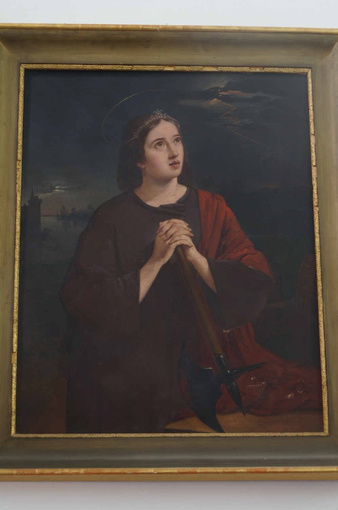

Santa Bárbara de Nicomedia (s. III) era la hija de un hombre muy rico que la encerró en una torre para preservarla del contacto con el mundo hasta que se casara. Pero ella, en secreto, se hizo cristiana y consagró su virginidad a Dios. Al enterarse, su padre quiso matarla, pero milagrosamente la torre se abrió y pudo huir. Finalmente fue capturada y torturada por orden de su padre para que renegara de la fe cristiana; como no lo consiguieron, su propio padre la decapitó. Como castigo divino, cuando este volvía a su casa, un rayo, precedido de un gran trueno, lo mató. Por este motivo, santa Bárbara es a quien se invoca contra los truenos y los rayos.
En este cuadro se la representa con un hacha en las manos, que recuerda su decapitación, y una diadema que indica su estatus social elevado. En segundo plano se observa una torre como aquella donde permaneció encerrada, y en el cielo, un rayo como el que mató a su padre.